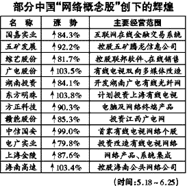
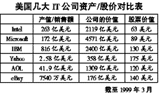

|
|
| 当前位置：电脑报电子版 > 1999 年 > 27 期 > 大众网络 > 中国有网络股吗？ |
| 《 中国有网络股吗？ 》 |
|
中国股市在经过一段时间的低迷后，终于在5月19日突然奋起，升势如虹，网络概念股率先走强，有利地带动了大势。评论家们普遍认为此轮强势行情，一是自去年夏季以来国家各种调控政策的结果，另外则是迎合了美国网络股炒作的狂飙。 中国网络的基础 对比美国网络经济的现状，中国还没有真正意义上的网络股，而只有借用“网络概念”的产业股——套用网络的名目，借助美国人网络股的神奇表现，企望跟风而已。先看中国的网络人口：根据CNNIC的统计，截至1998年底，中国上网人口只有210万，到今年年底有可能接近800万，估计可以占到世界上网人数（1.8亿）的4％左右；再看出口带宽，到1999年6月，我国网络总出口带宽只有143M多一点，相当于美国一个中等公司内部网的联接带宽，虽然联通将要开辟第5条国际出口，中国电信也准备再次拓宽ChinaNet，但毫无疑问，线路带宽不足始终是限制国人上网的瓶颈；再看网络应用方面，数据通讯、电子贸易、第四媒体被公认为是网络的发展方向，近几年西方传统电信业、传媒业巨头进入网络世界，正是看好网络对于未来经济增长的美好前景，而电子商务更如雨后春笋，成为一片实现所谓美国式成功梦想的沃土；相反在我国，不仅网上商贸法律、法规严重滞后，网络数据通讯发展举步维艰，网络贸易的基本条件还不具备，再加上国情的限制，网络资费高昂等原因，使得我国的网络应用仍然还处于低水平，电子银行、网络销售、网络医疗、教育、证券、生活服务等还刚刚起步，根本不足以影响到现实经济。 在这样的宏观背景下，中国现在热炒的网络股并不能真正代表网络特别是网络服务业发展的现状，也很难说能代表未来。 风险投资时代何时到来 促进网络公司上市的支撑之一就是风险投资。近几年，美国的风险投资一直不断增长。从这几年风险资金的流向来看，占第一位的总是信息技术产业，1998年占了全部风险投资的62％，达78亿美元。1998年靠风险资金支持的新上市公司共77家，其中近三分之一是网络公司。我国正孕育的新经济增长点——具有创新性质的中小企业，在实际操作中难以获得担保和充足的商业贷款。而我国居民存款总量与增长速度近些年都处于世界前列，居民除储蓄外也开始寻找直接或间接的投资方式。风险投资呼之欲出，这是发展的大趋势。特别是内地已建立起53个高新技术产业开发区，发展风险投资有一定的基础，但目前各方面条件还只处于开创阶段，比如高科技含量和高回报的环境、投资主体、成果转化与技术创新、技术资本化、降低门槛、民间资金介入、创业资本撤出渠道、中间组织及服务体系、监管机构、法规、法律等创业投资体系的格局亟需形成。探索和推进中国特色的资本市场，以推动高新科技产业的发展是我国目前亟需取得突破性进展的一项战略任务。 目前国内各界有关风险投资理论与实践的讨论可以说是方兴未艾，1999年5月18日在深圳召开的“1999年中国风险投资及信息产业发展”研讨会上，由中国软件行业协会、中国光大集团、深圳赛博韦尔软件产业集团组织的中国风险投资协会（筹委会）诞生，引进风险投资，扶持IT企业快速成长的新机制正在探索过程中，可以预见一个借助风险投资推动IT产业高速发展的时代呼之欲出。 网络概念股的命运 今年5月下旬，华尔街股市面对一年多来狂飙突进的网络股仿佛泻掉了底气，暴跌之势一日千里：Amason大跌48％，AOL下挫32％，Yahoo跌44％，著名网络广告商DoubleClick也下跌44％，而一向标榜盈利的网络拍卖商eBay也同样下跌22％。 自1999年一季度公布的网络股报表来看，像Yahoo、AOL都有很不错的盈利业绩，但到第二季度股价不升反降，这显然是市场信心不足的结果。在前两年历史上网络股也出现过大跌，然后很快就会反弹，但自5月中下旬以来卖压持续，网络股一路走低，许多投资者原本以为这不过是盘整调低，纷纷进场买入，结果仍是跌势连连。过去网络股一上市就受到众多投资人热烈抢购的情形已不复存在，甚至出现开盘第一天就跌破发行价，或上涨不到3天就单边下落的情况，这是过去没有出现过的现象。 从下面的《美国几大IT公司资产/股价对比表》上可以看到，美国网络公司的股价虽然大大超过了传统的像Intel、Microsoft等大型公司，甚至比蓝色巨人IBM的股价都高，但是这些网络公司产值和公司本身的价值却不能与它的股价相符，他们的股价所体现的并不是公司的业绩而是人们的期望。这样一个没有稳固基础的价值所表现出来的就是相当重的一股泡沫味。因此，在今年5月下旬以来出现的几乎是“精神崩溃”似的下跌就不足为奇了。无论如何这些美国网络公司都还基本有利润，对目前国内相当多的网络公司而言，利润还仅仅是一个美好希望，这个时候，我们看到网络股的飚升其实是个比较值得忧虑的现象，要知道凡是没有根基的东西往往“爬得越高跌得越惨”。 耐人寻味的是，1999年元月来京访问的美国全美证券交易商协会主席萨博透露，这个全球首家电子证券化市场正在与数家中国企业接触，商讨在美上市问题，1999年将会有首批中国公司(3～6家)在Nasdaq上市。姑且不论这种上市的可行性究竟有多少，仅凭一个中国概念和互联网包装就能获得美国投资者的信任吗？特别是在这样一个肯定盘整震荡的时候？！对此，我们的IT企业应要有充分的心理准备。 6月中旬以来，先是由雷曼兄弟充当融资协调人的China．com宣布即将在美上市，接着又相继传来AOL收购China．com10％股份以及还有可能收购更多股份的消息。其实据笔者了解，新浪、搜狐、中网、瀛海威其实都有海外上市计划，只不过针对市场变化的态势，各自调整策略的步骤、手段不同而已。今年中国的网络市场将会是世界投资高手们大显身手的舞台——因为国际环境有利，电信改革后的产业生存状态，国内网络发展势头有利。但更重要的是上市获得资金之后还要干什么？互联网企业的特殊性其实决定了它的投入并不需要太多的资金支持，在中国我们看到过太多的上市企业在获得资金后却不能正确定位自己的资金方向，最后导致不幸的结局。所以奉劝我们的IT企业把更多的精力放在网络建设与信息服务本身上来，在扩大用户规模与营收模式上多下功夫，上市前景固然美好但需要瓜熟蒂落、水到渠成，愿我们的网络概念股一路走好。 (文/陆 群) |
| 下载本期推荐软件 | 页 首 |
| 《电脑报》版权所有，电脑报网站编辑部设计制作发布 |